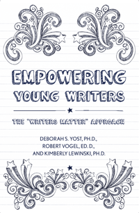

<body bgcolor="#FFFFFF" text="#000000" link="#0000FF" vlink="#CC0000" alink="#CC0000"><center><hr width="350" size="1" align="center" noshade>How writing helps celebrate students' lives and nurture their personal voices<hr width="350" size="1" align="center" noshade><p><a href="https://cdcshoppingcart.uchicago.edu/Cart/ChicagoBook.aspx?ISBN=9781439910818&&PRESS=temple" target="_top">Buy this book!</a> | <a href="https://cdcshoppingcart.uchicago.edu/Cart/Cart.aspx?PRESS=temple" target="_top">View Cart</a> | <a href="https://cdcshoppingcart.uchicago.edu/Cart/Cart.aspx?PRESS=temple" target="_top">Check Out</a></p><p></p></center><!--none//--><h1>Empowering Young Writers</h1>
<H2>The "Writers Matter" Approach</H2>
<h3>Deborah S. Yost, Ph.D., Robert Vogel, Ed.D. and Kimberly E. Lewinski, Ph.D.</h3>
<P>cloth 1-4399-1081-2 $79.50, Feb 14, <FONT COLOR=#990033>Available</FONT>
<br>paper 1-4399-1082-0 $25.95, Feb 14, <FONT COLOR=#990033>Available</FONT>
<br>Electronic Book 1-4399-1083-9 $25.95 <FONT COLOR=#990033>Available</FONT>
<BR> 192 pp
6x9
1&nbsp;table 1&nbsp;figure 8&nbsp;halftones
</P><BLOCKQUOTE><I>"In a world where data and product dominate decisions, </i>Empowering Young Writers<i> dares to remind us that at the heart of every teaching decision are our students. Grounded in research and learning theory, the authors explain how to utilize the workshop approach while implementing the structures and themes of ‘Writers Matter.’ Throughout the book, classrooms came to life in my mind, which made this enjoyable to read. These authors not only understand middle school kids, but they also seem to really enjoy them. The opportunities for writing, stemming from this work, are boundless when you consider the different ways they integrate writing across the curriculum. Best of all, the authors and teachers presented in the book get results. Results that show up on tests, yes, but more importantly, results that you can only see when empowering young writers to write well."</i><br>&#151<b>Aimee Buckner</b>, author of <i>Non-Fiction Notebooks and Notebook Know-How</i></I></BLOCKQUOTE>
<P>Pioneered in Philadelphia, and launched in middle schools in the fall of 2005, the "Writers Matter" approach was designed to discover ways to improve the fit between actual English curricula, district/state standards and, more recently, the Common Core Curriculum Standards for writing instruction. Adapted from Erin Gruwell's successful Freedom Writers Program, "Writers Matter" develops students' skills in the context of personal growth, understanding others, and making broader connections to the world.
<P><I>Empowering Young Writers</I> emphasizes a focus on free expression and establishing connections between the curriculum and students' personal lives. Program creator Robert Vogel, and his co-authors offer proven ways to motivate adolescents to write, work diligently to improve their writing skills, and think more critically about the world.
<P>This comprehensive book will help teachers, administrators, and education students apply the "Writers Matter" approach, which can have a profound impact on their students' lives and social development.
<BR>&nbsp;<h2>Excerpt</h2><P>Excerpt available at <a href="http://www.temple.edu/tempress">www.temple.edu/tempress</a></p>
<BR>&nbsp;<h2>Reviews</h2>
<p><i>"Each of the chapters makes a case for using the Writers Matter Approach in a variety of contexts and disciplines and for diverse purposes. Furthermore, this book may serve as a useful resource for classroom teachers interested in understanding ways of embedding personal writing into the curriculum through poetry workshops, responses to young adult literature, journal writing, and computer technology.... material within each of these chapters is clearly presented."</i> <br>&#151<b><i> Teachers College Record</i></b>
<BR>&nbsp;<h2>Contents</h2><P>
<p>Preface
<br>Acknowledgments
<p><b>Part I</b>
<br>1. Empowering Young Writers through the Writers Matter Approach
<br>2. Posing Intriguing Themes to Stimulate Adolescents’ Writing
<br>3. Inspiring Students to Write about Their Lives &#8226; <i>with Erin Bloom and Dianna Newton</I>
<br>4. Building Relationships and Community in the Classroom
<p><b>Part II</b>
<br>5. Building Writing Self-Efficacy through Writers’ Workshops
<br>6. Implementing the Writers’ Workshop &#8226; <i>with Steve Clark</i>
<br>7. Teaching Revision with Honesty &#8226; <i>with Dianna Newton</i>
<p><b>Part III</b>
<br>8. Using Poetry and Mentor Texts to Stimulate Personal Writing Reflections &#8226; <i>with Erin Bloom</i>
<br>9. Integrating Literature and Writing &#8226; <i>with Dianna Newton</i>
<br>10. Making Deeper Connections through Integrated Learning
<br>11. Integrating History, Reading, and Writing &#8226; <i>with Francesca Cantarini</i>
<p><b>Part IV</b>
<br>12. Making Community and World Connections through Writing
<p><b>APPENDIX A:</b> Students’ Writing Relating to the Five Writers Matter Theme
<br><b>APPENDIX B:</b> Web Resource for Teachers
<br>References
<br>Index
</P><BR>&nbsp;<H2>About the Author(s)</H2>
<P><b>Deborah S. Yost, Ph.D.</b> is Professor of Education at La Salle University. She served as the primary researcher for "Writers Matters" over the past several years.</P>
<P><b>Robert Vogel, Ed.D.</b> is Professor of Education, Founding Director of "Writers Matter" Program and Co-Director of Leadership and Global Understanding Minor at La Salle University.</P>
<P><b>Kimberly E. Lewinski, Ph.D.</b> is Assistant Professor of Education at La Salle University and serves as Assistant Director for the "Writers Matter" Program.</P>
<BR><H2>Subject Categories</H2>
<p><A HREF="/tempress/education.html" TARGET="_top">Education</a>
</p>
<p align="center"><a href="https://cdcshoppingcart.uchicago.edu/Cart/ChicagoBook.aspx?ISBN=9781439910818&&PRESS=temple" target="_top">Buy this book!</a> | <a href="https://cdcshoppingcart.uchicago.edu/Cart/Cart.aspx?PRESS=temple" target="_top">View Cart</a> | <a href="https://cdcshoppingcart.uchicago.edu/Cart/Cart.aspx?PRESS=temple" target="_top">Check Out</a></p><p><font face="Arial" size="1"><a href="copyright.html" onMouseOver="window.status='Web Copyright Policy';return true;" onMouseOut="window.status=''" title="Web Copyright Policy">&copy;</a> 2015 <a href="http://www.temple.edu" target="new" onMouseOver="window.status='Link to Temple University home page';return true;" onMouseOut="window.status=''" title="Link to Temple University home page">Temple University</a>. All Rights Reserved. http://www.temple.edu/tempress/titles/2294_reg.html</font></p>